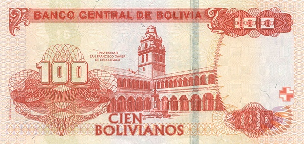

Боливия - Боливиано
10 боливиано
Лицевая сторона - портрет Сесилио Гусмана де Рохаса
Обратная сторона - памятник Heroínas de la Coronilla, панорама Кочабамбы
20 боливиано
Лицевая сторона - портрет Панталеона Даленсе
Обратная сторона - Золотой дом в Тарихе
50 боливиано
Лицевая сторона - портрет Мельхора Переса де Ольгина
Обратная сторона - Башня Общества в Потоси
100 боливиано
Лицевая сторона - портрет Габриэля Морено
Обратная сторона - здание Университета Св. Франциска в Сукре
200 боливиано
Лицевая сторона - портрет Франца Тамайо
Обратная сторона - индейские скульптуры в Тиуанако